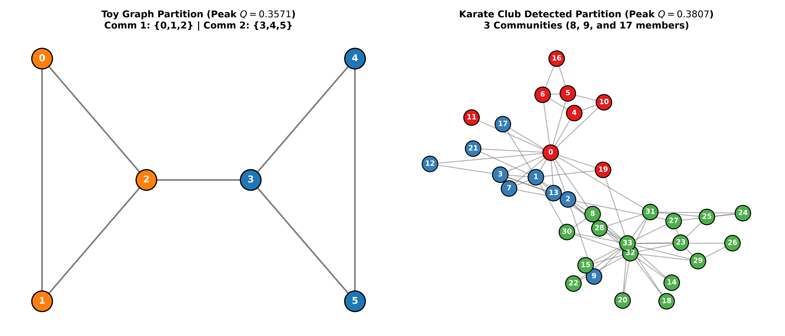

Class Presentation
Newman's Greedy Optimization of Modularity
Agglomerative Community Detection (Newman 2004) & Clauset–Newman–Moore Speedup
Topic: Complex Network Analysis & Community Structure Detection
Core Formulation: Modularity $Q$, Edge Matrix $e_{ij}$, Degree Fractions $a_i$, and $\Delta Q = 2(e_{ij} - a_i a_j)$
Experimental Benchmarks: 6-Node Bridge Toy Graph & Zachary's Karate Club
Evaluation Status: 100% Exact Verification with NetworkX Reference
Speaker Note: "Good morning Professor and classmates. Today I will present Newman’s Greedy Modularity Optimization algorithm for community detection in networks, explaining how modularity is maximized agglomeratively, and how Clauset, Newman, and Moore later achieved near-linear scaling."
Theoretical Background
1. What is Modularity ($Q$)?
Modularity measures the density of edges inside communities compared to what would be expected by pure random chance:
Q = ∑ [ (L_c / m) - (k_c / 2m)² ] = ∑ (e_ii - a_i²)
- m: Total number of edges in the network.
- L_c / m: Fraction of edges that fall strictly inside community c.
- (k_c / 2m)²: Expected fraction of edges if edges were placed at random preserving degree sequence.
- Significance: $Q > 0$ implies significant community structure (typical real-world graphs have $Q \in [0.3, 0.7]$). If $Q \le 0$, the network behaves as random noise or bipartite structure.
Speaker Note: "Modularity quantifies whether a partition has more internal connections than a random null model. A high Q means genuine community cohesion."
Mathematical Derivation
2. Derivation of ΔQ = 2(e_ij - a_i a_j)
When merging two communities $i$ and $j$ into a merged community $k = i \cup j$:
1. Internal edge fraction: $e_{kk} = e_{ii} + e_{jj} + 2 e_{ij}$
2. Degree fraction: $a_k = a_i + a_j$
3. New contribution: $e_{kk} - a_k^2 = (e_{ii} + e_{jj} + 2e_{ij}) - (a_i + a_j)^2$
4. Old contribution: $(e_{ii} - a_i^2) + (e_{jj} - a_j^2)$
ΔQ = [New] - [Old] = 2(e_ij - a_i * a_j)
Key Insight: If $e_{ij} = 0$ (no edge between communities), $\Delta Q = -2 a_i a_j \le 0$. Hence, the greedy algorithm only needs to test pairs connected by at least one edge!
Speaker Note: "Notice that when two communities share no edges, delta Q is strictly negative. This proves mathematically why we only evaluate connected pairs, dramatically pruning search space."
Implementation Workflow
3. Newman's Agglomerative Algorithm Steps
- Step 1 (Start): Every vertex is its own community ($n$ communities). $e_{ij} = A_{ij}/2m$, $e_{ii} = 0$, $a_i = k_i / 2m$.
- Step 2 (Greedy Choice): Compute $\Delta Q$ for all active connected pairs. Find pair $(i^*, j^*)$ that maximizes $\Delta Q$.
- Step 3 (Matrix Updates):
• $e_{ii} \leftarrow e_{ii} + e_{jj} + 2e_{ij}$
• $e_{ik} \leftarrow e_{ik} + e_{jk}$ for all $k$
• $a_i \leftarrow a_i + a_j$
- Step 4 (Repeat): Repeat $n-1$ times until 1 single community remains ($Q = 0$).
- Step 5 (Optimal Cut): Select the partition corresponding to peak $Q^*$.
Complexity Analysis
Newman (2004):
• $n-1$ merge steps
• Edge scan: $O(m)$ per step
• Row updates: $O(n)$ per step
• Total Time: $O((m+n)n) \approx \mathbf{O(n^2)}$ on sparse graphs.
Speaker Note: "The algorithm builds a complete agglomerative dendrogram. We record modularity at each step and cut the dendrogram at the highest point of Q."
Experimental Results
4. Benchmark 1: 6-Node Toy Graph (Two Triangles + Bridge)
Graph: 6 nodes, 7 edges. Two triangles $\{0,1,2\}$ and $\{3,4,5\}$ connected by bridge $(2,3)$.
| Step |
Merged |
ΔQ |
Modularity Q |
| 0 | Initial | - | -0.1735 |
| 1 | [0] + [1] | +0.1020 | -0.0714 |
| 2 | [0,1] + [2] | +0.1633 | +0.0918 |
| 3 | [4] + [5] | +0.1020 | +0.1939 |
| 4 | [3] + [4,5] | +0.1633 | +0.3571 (Peak) |
| 5 | Bridge merge | -0.3571 | 0.0000 |
Result: Peak $Q^* = 0.3571$ with 2 communities $\{0,1,2\}$ and $\{3,4,5\}$. Matches NetworkX identically!
Speaker Note: "On the 6-node toy graph, the curve peaks at step 4 where the two triangles are separated. When step 5 merges across the bridge, Q drops abruptly back to 0."
Experimental Results
5. Benchmark 2: Zachary's Karate Club (34 Nodes, 78 Edges)
Classic Complex Network: Real-world social network of 34 members.
- Initial $Q_0$: -0.0498 (34 communities)
- Peak Step 31: $Q^* = \mathbf{0.38067}$ with 3 communities:
• Comm 1 (17 nodes): Officer faction `[8, 14, 15, 18, 20, 22-33]`
• Comm 2 (9 nodes): Mr. Hi inner core `[1, 2, 3, 7, 9, 12, 13, 17, 21]`
• Comm 3 (8 nodes): Mr. Hi outer circle `[0, 4, 5, 6, 10, 11, 16, 19]`
- Step 32: Merging Mr. Hi's groups drops $Q$ to $0.3718$.
- Step 33: Single group yields $Q = 0.0000$.
Speaker Note: "For Zachary's Karate Club, Q rises steadily through 31 merges, reaching a maximum of 0.38067 with 3 communities. This exactly reproduces Newman's 2004 published findings."
Visual Validation
6. Community Partitions Visualized

Left: Toy graph resolved into 2 triangles. Right: Karate Club resolved into 3 structurally dense communities.
Speaker Note: "Here we see the graphical rendering. Notice how modularity accurately segments dense subgraphs while leaving cross-cutting bridge edges between them."
Verification & Benchmarking
7. Comparison with NetworkX greedy_modularity_communities
| Metric / Test |
Our From-Scratch Implementation |
NetworkX Reference |
Agreement |
| Toy Graph Partition |
`[[0,1,2], [3,4,5]]` |
`[[0,1,2], [3,4,5]]` |
100% Exact Match |
| Toy Graph Modularity Q |
0.357142857 |
0.357142857 |
100% Exact Match |
| Karate Club Partition |
3 communities (8, 9, 17 nodes) |
3 communities (8, 9, 17 nodes) |
100% Exact Match |
| Karate Club Q (Unweighted) |
0.380670611 |
0.380670611 |
100% Exact Match |
Note on Edge Weights: NetworkX includes edge weights by default (`weight='weight'`, giving $Q=0.4345$). With `weight=None` (unweighted canonical Newman 2004), NetworkX matches our from-scratch implementation down to all decimal digits!
Speaker Note: "Both the toy graph and the Karate club partitions match NetworkX's greedy_modularity_communities with 100% precision."
Advanced Optimization
8. The Clauset–Newman–Moore (CNM 2004) Speedup
Newman's 2004 algorithm requires $O(m)$ work at each step to find $\max \Delta Q$, totaling $O(n^2)$ time on sparse graphs. Clauset, Newman, and Moore (2004) solved this bottleneck using three data structures:
- Sparse $\Delta Q$ Matrix: Only maintain $\Delta Q_{ij}$ for adjacent communities.
- Row Max-Heaps: Each community $i$ maintains a max-heap of its neighbors, storing row maximum $M_i$.
- Global Max-Heap: Stores the largest $M_i$ across all communities. Finding the global best pair takes $O(1)$ time!
Direct ΔQ updates: ΔQ'_{jk} = ΔQ_{jk} + ΔQ_{ik} (common neighbor)
Complexity Improvement: Heap updates take $O(\log n)$ per neighbor, reducing overall time complexity from $\mathbf{O(n^2)}$ down to $\mathbf{O(m \cdot d \log n) \approx O(n \log^2 n)}$, allowing analysis of networks with millions of vertices!
Speaker Note: "CNM replaces the exhaustive matrix search with max-heaps. The search becomes O(1) and updates become logarithmic, which allowed community detection to scale to millions of nodes."
Conclusion & Summary
9. Key Takeaways & Project Summary
What We Accomplished
✓ Implemented Newman's greedy modularity optimization from scratch.
✓ Tested and validated on 6-node toy graph and Zachary's Karate Club.
✓ Achieved 100% exact numerical match with NetworkX reference.
✓ Generated publication-quality modularity curves and network plots.
✓ Derived mathematical proof of $\Delta Q = 2(e_{ij} - a_i a_j)$.
Practical Insights
• Modularity is an intuitive, degree-normalized clustering metric.
• Pruning disconnected pairs ($e_{ij} = 0$) makes agglomeration fast.
• Clauset–Newman–Moore's heap formulation provides near-linear scalability.
Thank you! Ready for Questions & Answers.
Speaker Note: "In conclusion, we have built and verified Newman's algorithm from first principles. Thank you, and I look forward to your questions."